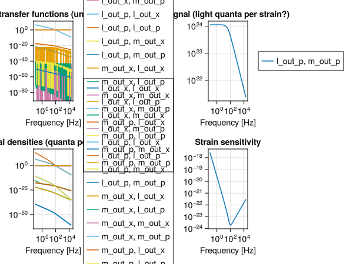

using SLHQuantumSystems
using SecondQuantizedAlgebra
using Symbolics
using ControlSystems
using GLMakie
using LinearAlgebra
using DelimitedFiles
using PhysicalConstants.CODATA2018: ReducedPlanckConstant as ℏ_SI, SpeedOfLightInVacuum as c_SILIGO Physical Parameters (from GWINC A+ configuration)
ℏ = ℏ_SI.val # J·s
c_phys = c_SI.val # m/s
λ = 1.064e-6 # m (Nd:YAG)
ω_l = 2π * c_phys / λ # rad/s
L_arm = 3995.0 # m (arm cavity length)
T_ITM = 0.014 # power transmittance of ITM
κ_cavity = sqrt(T_ITM * c_phys / (2 * L_arm)) # amplitude decay rate [rad/s]
P_circ = 750.0e3 # W (circulating power)
m_mirror = 39.6 / 2 # kg
Ω_mech = 2π * 5.0e-6 # rad/s — physical pendulum (~1 Hz)
mech_couple = 1.0e-23;SLH model: optomechanical cavity (Chen 2013 eq 2.4) [2]
hilb = FockSpace(:cavity) ⊗ FockSpace(:mirror)
subspaces = [OpticalMode(""), MechanicalMode("")]
opt_sub = subspaces[1]
mech_sub = subspaces[2]
a = Destroy(hilb, operatornames(opt_sub)[1], 1)
b = Destroy(hilb, operatornames(mech_sub)[1], 2)
@variables ω l κ Ω m Γ g
H = Ω * b' * b - g * (b' + b) * (a' + a)
L_ops = [κ * a, Γ * b]
S_mat = [1 0; 0 1]
pdict = Dict(zip(nameof.([ω, l, κ, Ω, m, Γ, g]), [ω, l, κ, Ω, m, Γ, g]))
opdict = Dict(zip(getfield.([a, b], :name), [a, b]))
slh = SLH(
"opto", subspaces, pdict, opdict,
["l_in", "m_in"], ["l_out", "m_out"], S_mat, L_ops, H
)
qss = toquadrature(QuantumStateSpace(slh))QuantumStateSpace{ControlSystemsBase.Continuous, QuadratureBasis}
A =
-0.4999999999999999(κ^2) 0.0 0.0 0.0
0.0 -0.4999999999999999(κ^2) 1.9999999999999996g 0.0
0.0 0.0 -0.4999999999999999(Γ^2) 0.9999999999999998Ω
1.9999999999999996g 0.0 -0.9999999999999998Ω -0.4999999999999999(Γ^2)
B =
-0.9999999999999998κ 0.0 0.0 0.0
0.0 -0.9999999999999998κ 0.0 0.0
0.0 0.0 -0.9999999999999998Γ 0.0
0.0 0.0 0.0 -0.9999999999999998Γ
C =
0.9999999999999998κ 0.0 0.0 0.0
0.0 0.9999999999999998κ 0.0 0.0
0.0 0.0 0.9999999999999998Γ 0.0
0.0 0.0 0.0 0.9999999999999998Γ
D =
0.9999999999999998 0.0 0.0 0.0
0.0 0.9999999999999998 0.0 0.0
0.0 0.0 0.9999999999999998 0.0
0.0 0.0 0.0 0.9999999999999998
Continuous-time state-space modelCoupling constants [3]
Zero-point fluctuation length of the mechanical mode [m] Would like to calculate as: xzpf = zpflength(mech_sub, numeric.parameters) but numeric is not defined yet, this is a bit of a circular requirement
x_zpf = sqrt(ℏ / (2 * m_mirror * Ω_mech))2.9114916655167097e-16Single-photon optomechanical coupling [rad/s] g₀ = (ωL / L) · xzpf
g_OM = (ω_l / (L_arm)) * x_zpf0.0001290202000375755Stored intracavity photon number (dimensionless) n̄cav = Pcirc · (2L/c) / (ℏ·ω_l) The (2L/c) round-trip time converts circulating photon flux [1/s] into the population actually resonating inside the cavity.
N_bar = P_circ * (2 * L_arm / c_phys) / (ℏ * ω_l)1.0706616214135605e20Linearized optomechanical coupling [rad/s] g = g₀·√n̄ (used as the coefficient of (a+a†)(b+b†) in H)
g_optomech = g_OM * sqrt(N_bar) #eq 30 of aspelmeyer
println("=== Parameters ===")
println("Ω/(2π) = $(round(Ω_mech / (2π), digits = 2)) Hz (mechanical pendulum resonance )")
println("g_OM/(2π) = $(round(g_OM / (2π), sigdigits = 3)) Hz (single-photon coupling)")
println("N̄ = $(round(N_bar, sigdigits = 3)) photons")=== Parameters ===
Ω/(2π) = 0.0 Hz (mechanical pendulum resonance )
g_OM/(2π) = 2.05e-5 Hz (single-photon coupling)
N̄ = 1.07e20 photonsNumerical substitution
paramdict = Dict(
ω => 0, # cavity detuning
l => L_arm,
κ => κ_cavity,
Ω => Ω_mech,
m => m_mirror,
g => g_optomech,
Γ => mech_couple # mechanical damping
)
numeric = substitute(qss, paramdict)QuantumStateSpace{ControlSystemsBase.Continuous, QuadratureBasis}
A =
-262.6467091364205 0.0 + 0.0im 0.0 + 0.0im 0.0 + 0.0im
0.0 + 0.0im -262.6467091364205 2.670015756455614e6 0.0 + 0.0im
0.0 + 0.0im 0.0 + 0.0im -4.999999999999998e-47 3.141592653589793e-5
2.670015756455614e6 0.0 + 0.0im -3.141592653589793e-5 -4.999999999999998e-47
B =
-22.919280492040777 0.0 + 0.0im 0.0 + 0.0im 0.0 + 0.0im
0.0 + 0.0im -22.919280492040777 0.0 + 0.0im 0.0 + 0.0im
0.0 + 0.0im 0.0 + 0.0im -9.999999999999997e-24 0.0 + 0.0im
0.0 + 0.0im 0.0 + 0.0im 0.0 + 0.0im -9.999999999999997e-24
C =
22.919280492040777 0.0 + 0.0im 0.0 + 0.0im 0.0 + 0.0im
0.0 + 0.0im 22.919280492040777 0.0 + 0.0im 0.0 + 0.0im
0.0 + 0.0im 0.0 + 0.0im 9.999999999999997e-24 0.0 + 0.0im
0.0 + 0.0im 0.0 + 0.0im 0.0 + 0.0im 9.999999999999997e-24
D =
0.9999999999999998 + 0.0im 0.0 + 0.0im 0.0 + 0.0im 0.0 + 0.0im
0.0 + 0.0im 0.9999999999999998 + 0.0im 0.0 + 0.0im 0.0 + 0.0im
0.0 + 0.0im 0.0 + 0.0im 0.9999999999999998 + 0.0im 0.0 + 0.0im
0.0 + 0.0im 0.0 + 0.0im 0.0 + 0.0im 0.9999999999999998 + 0.0im
Continuous-time state-space modelFrequency grid (angular, rad/s)
freq_hz = collect(logrange(0.1, 20_000.0, 500))
freq = 2π .* freq_hz;output noise spectral density
G = freqresp(numeric, freq)
sd = spectral_density(numeric, freq)
fig = Figure()
ax_tf = Axis(
fig[1, 1];
xscale = log10, yscale = log10,
xlabel = "Frequency [Hz]",
title = "transfer functions (unitless)"
)
for (ii, iname) in enumerate(sd.names)
for (jj, jname) in enumerate(sd.names)
lines!(ax_tf, freq_hz, abs.(G[ii, jj, :]), label = "$iname, $jname")
end
end
fig[1, 2] = Legend(fig, ax_tf)
ax_noise = Axis(
fig[2, 1];
xscale = log10, yscale = log10,
limits = (nothing, nothing, nothing, nothing),
xlabel = "Frequency [Hz]",
title = "spectral densities (quanta per root hertz)"
)
for ii in sd.names
for jj in sd.names
lines!(ax_noise, freq_hz, abs.(sd[ii, jj]), label = "$ii, $jj")
end
end
fig[2, 2] = Legend(fig, ax_noise)
ax_sig = Axis(
fig[1, 3];
xscale = log10, yscale = log10,
xlabel = "Frequency [Hz]",
title = "signal (light quanta per strain?)"
)
ii = 2
jj = 4
sig = G[ii, jj, :] .* L_arm .* freq .^ 2 ./ (2 * sqrt(2) .* Ω_mech .* x_zpf .* mech_couple)
lines!(ax_sig, freq_hz, abs.(sig), label = "$(sd.names[ii]), $(sd.names[jj])")
fig[1, 4] = Legend(fig, ax_sig)
ax_strain = Axis(
fig[2, 3];
xscale = log10, yscale = log10,
xlabel = "Frequency [Hz]",
title = "Strain sensitivity"
)
strainsense = sqrt.(real.(sd["l_out_p", "l_out_p"])) ./ abs.(sig)
lines!(ax_strain, freq_hz, strainsense)
fig
This page was generated using Literate.jl.